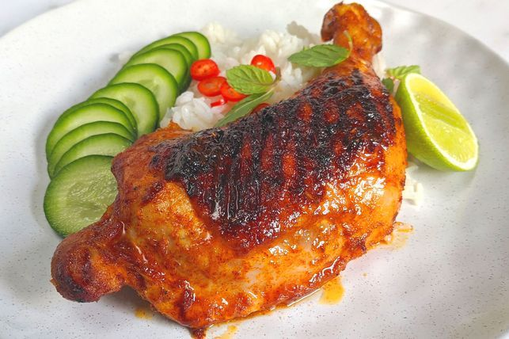

Chicken Inasal

Fried chicken of the Philippines
Fried chicken with a Filipino twist
Ingredients
- 1 kg of chicken
- 2 satches of MAGGI magic sarap
- 2 tbls of soy sauce
- 3 tbls of white vinegar
- 4 cloves of garlic
- 3 stalks of lemongrass
- 1/4 cup of ginger
- 2 tbls of brown sugar
- 1/4 tsp of ground pepper
- 2 tbls of annatto seeds
- 1/4 cup of vegetable oil
- 6 pc of bamboo shoot
- 1/4 cup of spiced vinegar
Steps on how to make Chicken Inasal
- Marinate the chicken with MAGGI® MAGIC SARAP®, MAGGI Soy, vinegar, garlic, lemongrass, ginger and sugar in the refrigerator overnight.
- Gently heat annatto seeds and oil in a pan. Strain and set aside.
- Remove chicken from the refrigerator 1 hour before grilling. Skewer chicken in thick bamboo sticks.
- Grill chicken over charcoal using low heat. Brush chicken with annatto oil. Transfer on a serving plate and serve with sinamak.